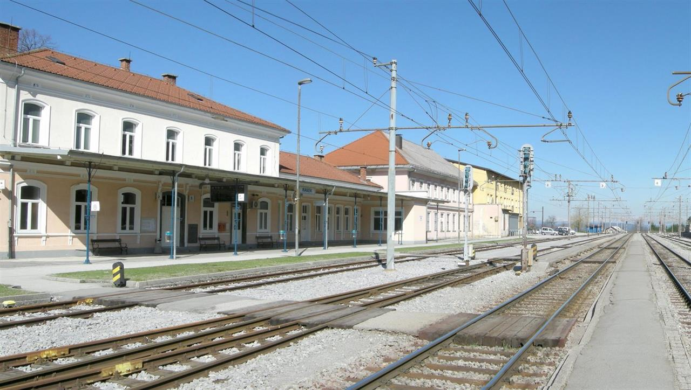
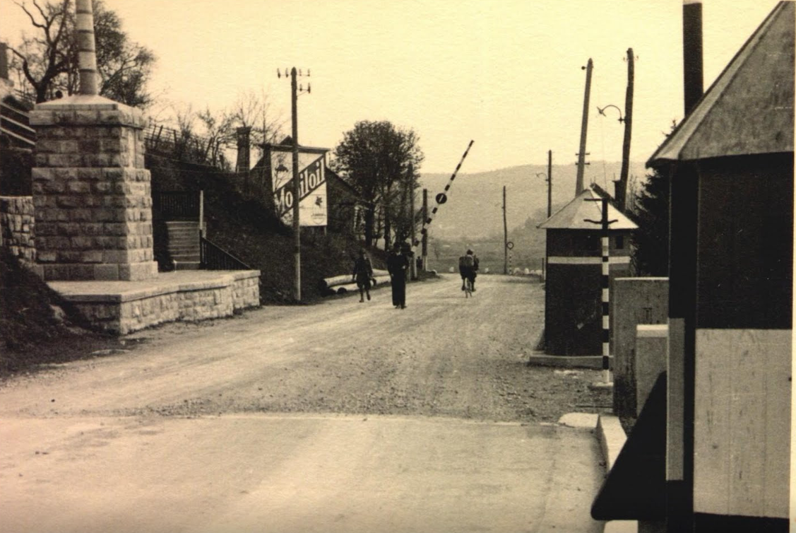
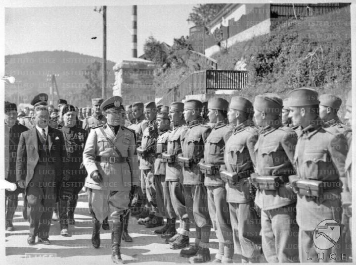
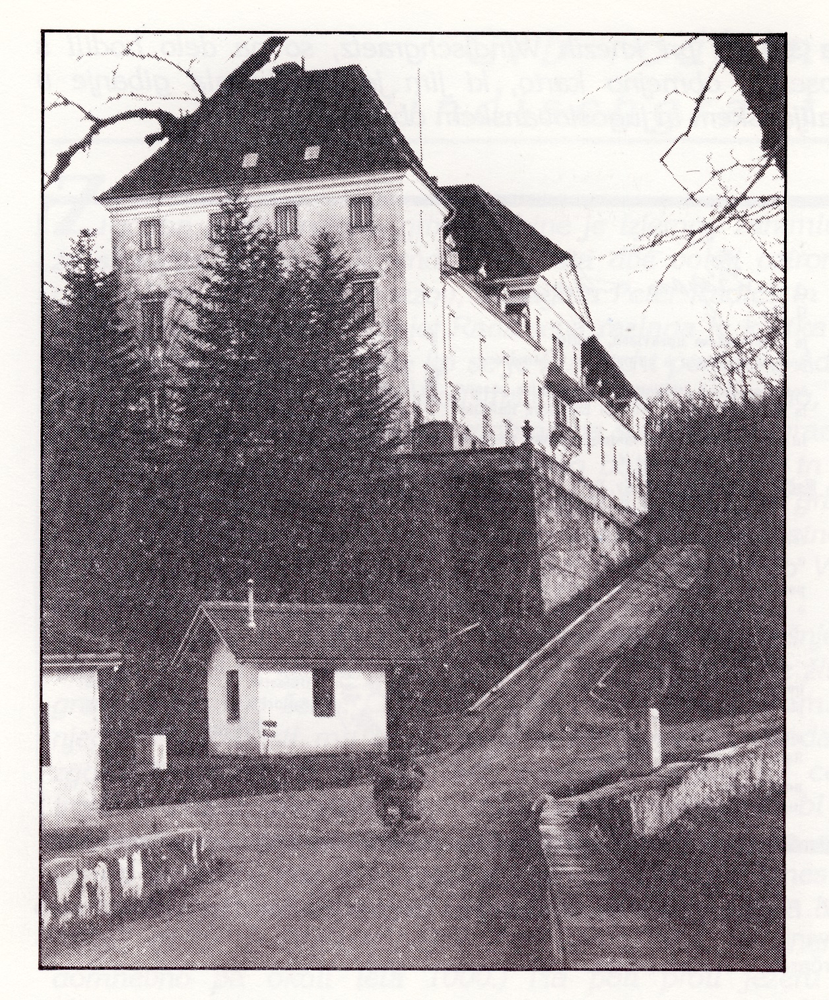
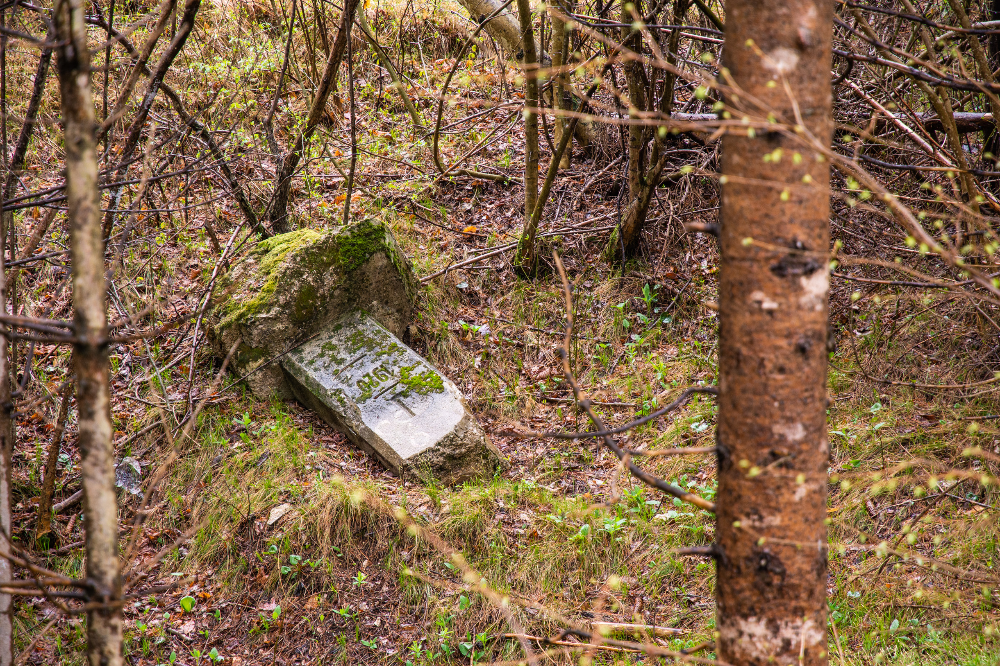

<!doctype html>
<html lang="en">
    <head>
        <meta charset="utf-8">
        <meta http-equiv="X-UA-Compatible" content="IE=edge">
        <meta name="viewport" content="initial-scale=1,user-scalable=no,maximum-scale=1,width=device-width">
        <meta name="mobile-web-app-capable" content="yes">
        <meta name="apple-mobile-web-app-capable" content="yes">
        <link rel="stylesheet" href="css/leaflet.css"><link rel="stylesheet" href="css/L.Control.Locate.min.css">
        <link rel="stylesheet" href="css/qgis2web.css"><link rel="stylesheet" href="css/fontawesome-all.min.css">
        <link rel="stylesheet" href="css/leaflet-measure.css">
        <style>
        html, body, #map {
            width: 100%;
            height: 100%;
            padding: 0;
            margin: 0;
        }
        </style>
        <title>Planina rapalska meja</title>
    </head>
    <body>
        <div id="map">
        </div>
        <script src="js/qgis2web_expressions.js"></script>
        <script src="js/leaflet.js"></script><script src="js/L.Control.Locate.min.js"></script>
        <script src="js/multi-style-layer.js"></script>
        <script src="js/leaflet.rotatedMarker.js"></script>
        <script src="js/leaflet.pattern.js"></script>
        <script src="js/leaflet-hash.js"></script>
        <script src="js/Autolinker.min.js"></script>
        <script src="js/rbush.min.js"></script>
        <script src="js/labelgun.min.js"></script>
        <script src="js/labels.js"></script>
        <script src="js/leaflet-measure.js"></script>
        <script src="data/nrp_area_1.js"></script>
        <script src="data/PohodniskePoti_2.js"></script>
        <script src="data/PohodniskePoti_3.js"></script>
        <script src="data/PohodniskePoti_4.js"></script>
        <script src="data/PohodniskePoti_5.js"></script>
        <script>
        var map = L.map('map', {
            zoomControl:true, maxZoom:18, minZoom:15
        }).setView([45.8303,14.2524], 16);
        var hash = new L.Hash(map);
        map.attributionControl.setPrefix('<a href="https://github.com/tomchadwin/qgis2web" target="_blank">qgis2web</a> &middot; <a href="https://leafletjs.com" title="A JS library for interactive maps">Leaflet</a> &middot; <a href="https://qgis.org">QGIS</a>');
        var autolinker = new Autolinker({truncate: {length: 30, location: 'smart'}});
        L.control.locate({locateOptions: {maxZoom: 19}}).addTo(map);
        var measureControl = new L.Control.Measure({
            position: 'topleft',
            primaryLengthUnit: 'meters',
            secondaryLengthUnit: 'kilometers',
            primaryAreaUnit: 'sqmeters',
            secondaryAreaUnit: 'hectares'
        });
        measureControl.addTo(map);
        document.getElementsByClassName('leaflet-control-measure-toggle')[0]
        .innerHTML = '';
        document.getElementsByClassName('leaflet-control-measure-toggle')[0]
        .className += ' fas fa-ruler';
        var bounds_group = new L.featureGroup([]);
        function setBounds() {
        }
        map.createPane('pane_OpenStreetMapmonochrome_0');
        map.getPane('pane_OpenStreetMapmonochrome_0').style.zIndex = 400;
        var layer_OpenStreetMapmonochrome_0 = L.tileLayer('http://a.tiles.wmflabs.org/bw-mapnik/{z}/{x}/{y}.png', {
            pane: 'pane_OpenStreetMapmonochrome_0',
            opacity: 0.5,
            attribution: '',
            minZoom: 12,
            maxZoom: 24,
            minNativeZoom: 12,
            maxNativeZoom: 21
        });
        layer_OpenStreetMapmonochrome_0;
        map.addLayer(layer_OpenStreetMapmonochrome_0);

        //POT1
        function pop_PohodniskePoti_2(feature, layer) {
            var popupContent = '<table>\
                    <tr>\
                        <td colspan="2">' + (feature.properties['layer'] !== null ? autolinker.link(feature.properties['layer'].toLocaleString()) : '') + '</td>\
                    </tr>\
                    <tr>\
                        <td colspan="2"><strong>Dolzina_km</strong><br />' + (feature.properties['Dolzina_km'] !== null ? autolinker.link(feature.properties['Dolzina_km'].toLocaleString()) : '') + '</td>\
                    </tr>\
                </table>';
            layer.bindPopup(popupContent, {maxHeight: 400});
        }

        function style_PohodniskePoti_2_0() {
            return {
                pane: 'pane_PohodniskePoti_2',
                opacity: 1,
                color: 'rgba(182,127,90,1.0)',
                dashArray: '5,10',
                lineCap: 'round',
                lineJoin: 'round',
                weight: 3.0,
                fillOpacity: 0,
                interactive: true,
            }
        }
        map.createPane('pane_PohodniskePoti_2');
        map.getPane('pane_PohodniskePoti_2').style.zIndex = 402;
        map.getPane('pane_PohodniskePoti_2').style['mix-blend-mode'] = 'normal';
        var layer_PohodniskePoti_2 = new L.geoJson(json_PohodniskePoti_2, {
            attribution: '',
            interactive: true,
            dataVar: 'json_PohodniskePoti_2',
            layerName: 'layer_PohodniskePoti_2',
            pane: 'pane_PohodniskePoti_2',
            onEachFeature: pop_PohodniskePoti_2,
            style: style_PohodniskePoti_2_0,
        });
        bounds_group.addLayer(layer_PohodniskePoti_2);
        map.addLayer(layer_PohodniskePoti_2);

        //POT2
        function pop_PohodniskePoti_3(feature, layer) {
            var popupContent = '<table>\
                    <tr>\
                        <td colspan="2">' + (feature.properties['layer'] !== null ? autolinker.link(feature.properties['layer'].toLocaleString()) : '') + '</td>\
                    </tr>\
                    <tr>\
                        <td colspan="2"><strong>Dolzina_km</strong><br />' + (feature.properties['Dolzina_km'] !== null ? autolinker.link(feature.properties['Dolzina_km'].toLocaleString()) : '') + '</td>\
                    </tr>\
                </table>';
            layer.bindPopup(popupContent, {maxHeight: 400});
        }

        function style_PohodniskePoti_3_0() {
            return {
                pane: 'pane_PohodniskePoti_3',
                opacity: 1,
                color: 'rgba(60,179,113,1.0)',
                dashArray: '5,10',
                lineCap: 'round',
                lineJoin: 'round',
                weight: 3.0,
                fillOpacity: 0,
                interactive: true,
            }
        }
        map.createPane('pane_PohodniskePoti_3');
        map.getPane('pane_PohodniskePoti_3').style.zIndex = 402;
        map.getPane('pane_PohodniskePoti_3').style['mix-blend-mode'] = 'normal';
        var layer_PohodniskePoti_3 = new L.geoJson(json_PohodniskePoti_3, {
            attribution: '',
            interactive: true,
            dataVar: 'json_PohodniskePoti_3',
            layerName: 'layer_PohodniskePoti_3',
            pane: 'pane_PohodniskePoti_3',
            onEachFeature: pop_PohodniskePoti_3,
            style: style_PohodniskePoti_3_0,
        });
        bounds_group.addLayer(layer_PohodniskePoti_3);
        map.addLayer(layer_PohodniskePoti_3);

        //Rapalska
        function pop_PohodniskePoti_4(feature, layer) {
            var popupContent = '<table>\
                    <tr>\
                        <td colspan="2">' + (feature.properties['layer'] !== null ? autolinker.link(feature.properties['layer'].toLocaleString()) : '') + '</td>\
                    </tr>\
                    <tr>\
                        <td colspan="2"><strong>Dolzina_km</strong><br />' + (feature.properties['Dolzina_km'] !== null ? autolinker.link(feature.properties['Dolzina_km'].toLocaleString()) : '') + '</td>\
                    </tr>\
                </table>';
            layer.bindPopup(popupContent, {maxHeight: 400});
        }

        function style_PohodniskePoti_4_0() {
            return {
                pane: 'pane_PohodniskePoti_4',
                opacity: 1,
                color: 'rgba(255,99,71,1.0)',
                dashArray: '1,3',
                lineCap: 'round',
                lineJoin: 'round',
                weight: 2.0,
                fillOpacity: 0,
                interactive: true,
            }
        }
        map.createPane('pane_PohodniskePoti_4');
        map.getPane('pane_PohodniskePoti_4').style.zIndex = 402;
        map.getPane('pane_PohodniskePoti_4').style['mix-blend-mode'] = 'normal';
        var layer_PohodniskePoti_4 = new L.geoJson(json_PohodniskePoti_4, {
            attribution: '',
            interactive: true,
            dataVar: 'json_PohodniskePoti_4',
            layerName: 'layer_PohodniskePoti_4',
            pane: 'pane_PohodniskePoti_4',
            onEachFeature: pop_PohodniskePoti_4,
            style: style_PohodniskePoti_4_0,
        });
        bounds_group.addLayer(layer_PohodniskePoti_4);
        map.addLayer(layer_PohodniskePoti_4);

        //kolesarska
        function pop_PohodniskePoti_5(feature, layer) {
            var popupContent = '<table>\
                    <tr>\
                        <td colspan="2">' + (feature.properties['layer'] !== null ? autolinker.link(feature.properties['layer'].toLocaleString()) : '') + '</td>\
                    </tr>\
                    <tr>\
                        <td colspan="2"><strong>Dolzina_km</strong><br />' + (feature.properties['Dolzina_km'] !== null ? autolinker.link(feature.properties['Dolzina_km'].toLocaleString()) : '') + '</td>\
                    </tr>\
                </table>';
            layer.bindPopup(popupContent, {maxHeight: 400});
        }

        function style_PohodniskePoti_5_0() {
            return {
                pane: 'pane_PohodniskePoti_5',
                opacity: 1,
                color: 'rgba(255,255,0,0.5)',
                dashArray: '10,10',
                lineCap: 'round',
                lineJoin: 'round',
                weight: 4.0,
                fillOpacity: 0,
                interactive: true,
            }
        }
        map.createPane('pane_PohodniskePoti_5');
        map.getPane('pane_PohodniskePoti_5').style.zIndex = 402;
        map.getPane('pane_PohodniskePoti_5').style['mix-blend-mode'] = 'normal';
        var layer_PohodniskePoti_5 = new L.geoJson(json_PohodniskePoti_5, {
            attribution: '',
            interactive: true,
            dataVar: 'json_PohodniskePoti_5',
            layerName: 'layer_PohodniskePoti_5',
            pane: 'pane_PohodniskePoti_5',
            onEachFeature: pop_PohodniskePoti_5,
            style: style_PohodniskePoti_5_0,
        });
        bounds_group.addLayer(layer_PohodniskePoti_5);
        map.addLayer(layer_PohodniskePoti_5);

        //Zeleznica
        var zeleznica = L.icon({
        iconUrl: './markers/zeleznica.png',
        iconSize: [40, 40], // size of the icon
        });
    var marker = L.marker([45.8153, 14.3131], {icon: zeleznica}).addTo(map).bindPopup("<h3>Železniška postaja Rakek</h3> <p><br>Za vozni red klikni na sliko<a href='https://potniski.sz.si/'</p></a>");

        //Parking
        var parking = L.icon({
        iconUrl: './markers/parking.png',
        iconSize: [40, 40], // size of the icon
        });
    var marker = L.marker([45.8276, 14.26468], {icon: parking}).addTo(map);
    var marker = L.marker([45.83625, 14.25597], {icon: parking}).addTo(map);

        //1-izhodišče
    var NRPIcon = L.icon({
        iconUrl: 'Postojna.png',
        iconSize: [33, 49], // size of the icon
        });

    var marker = L.marker([45.82701, 14.26497], {icon: NRPIcon}).addTo(map).bindPopup("<h3>Predstavitev poti (karta) in uvod v rapalsko obdobje</h3><p>Karta območja, variante in opis poti, kaj je ob poti in uvod v rapalsko obdobje.</p>");
    marker.bindTooltip('<div style="color: #643c00; text-shadow: -1px -1px 0 #F8F8F8, 1px -1px 0 #F8F8F8, -1px 1px 0 #F8F8F8, 1px 1px 0 #F8F8F8;font-size: 8pt; font-weight: bold; font-family: \'Montserrat\', sans-serif;"><b>Izhodišče in uvod </b>', {permanent: true, offset: [-10,-20]}).openTooltip();

    //1-mejniki
    var NRPIcon = L.icon({
        iconUrl: 'Postojna.png',
        iconSize: [33, 49], // size of the icon
        });

    var marker = L.marker([45.82485, 14.2606], {icon: NRPIcon}).addTo(map).bindPopup("<h3>Nastanek meje</h3> <p>Tu bodo prvič videli mejnik rapalske meje. Tu bi predstavili zakoličevanje in gradnjo mejnikov. Ideja: 3D model mejnika z razlago kaj pomenijo posamezne oznake. Mejniki so imeli smerokaz do prejšnjega in naslednjega mejnika, smer severa, številko sektorja (od tromeje do Reke) in zaporedno rimsko številko znotraj sektorja. <br> <a href='https://www.rapalskameja.si/dolocanje-meje-na-terenu/'</p></a>");
    marker.bindTooltip('<div style="color: #643c00; text-shadow: -1px -1px 0 #F8F8F8, 1px -1px 0 #F8F8F8, -1px 1px 0 #F8F8F8, 1px 1px 0 #F8F8F8;font-size: 8pt; font-weight: bold; font-family: \'Montserrat\', sans-serif;"><b>1 - Mejniki</b>', {permanent: true, offset: [-10,-20]}).openTooltip();

    //2-Malni
    var NRPIcon = L.icon({
        iconUrl: 'Postojna.png',
        iconSize: [33, 49], // size of the icon
        });

    var marker = L.marker([45.82226, 14.25558], {icon: NRPIcon}).addTo(map).bindPopup("<h3>Malni</h3> <p>Film o zaselku Malni, ki ga je meja razdelila na dva dela. Zgornji del je pripadel Italiji in so poleg mlinov/žag imeli še ogljarstvo. Takrat so imeli Malni preko 500(?) prebivalcev. Več info v prispevku Milavca o zaselku.<br>");
    marker.bindTooltip('<div style="color: #643c00; text-shadow: -1px -1px 0 #F8F8F8, 1px -1px 0 #F8F8F8, -1px 1px 0 #F8F8F8, 1px 1px 0 #F8F8F8;font-size: 8pt; font-weight: bold; font-family: \'Montserrat\', sans-serif;"><b><b>2 - Malni</b>', {permanent: true, offset: [-10,-20]}).openTooltip();

    //3-Most-Kontrolna točka
    var NRPIcon = L.icon({
        iconUrl: 'Postojna.png',
        iconSize: [33, 49], // size of the icon
        });

    var marker = L.marker([45.82796, 14.25386], {icon: NRPIcon}).addTo(map).bindPopup("<h3>Tihotapljenje</h3> <p>Lokalne zgodbe o tihotapljenju? Mogoče video tihotapljenja konj preko meje?</p>");
    marker.bindTooltip('<div style="color: #643c00; text-shadow: -1px -1px 0 #F8F8F8, 1px -1px 0 #F8F8F8, -1px 1px 0 #F8F8F8, 1px 1px 0 #F8F8F8;font-size: 8pt; font-weight: bold; font-family: \'Montserrat\', sans-serif;"><b><b>3 - Most preko Unice</b>', {permanent: true, offset: [-10,-20]}).openTooltip();

    //4-Planina1
    var NRPIcon = L.icon({
        iconUrl: 'Postojna.png',
        iconSize: [33, 49], // size of the icon
        });

    var marker = L.marker([45.82775, 14.25005], {icon: NRPIcon}).addTo(map).bindPopup("<h3>Planina med obema vojnama</h3> <p>Planina je kraj v Sloveniji, ki ga je rapalska meja najbolj delila na dva dela. Video pričevanje o meji in Planini kot obmejnem kraju. Prvotni mejni prehod v gostilni Pri Rusu ter gradnja novega namenskega mejnega prehoda 1937. </p>");
    marker.bindTooltip('<div style="color: #643c00; text-shadow: -1px -1px 0 #F8F8F8, 1px -1px 0 #F8F8F8, -1px 1px 0 #F8F8F8, 1px 1px 0 #F8F8F8;font-size: 8pt; font-weight: bold; font-family: \'Montserrat\', sans-serif;"><b><b>4 - Jugoslovanska carina</b>', {permanent: true, offset: [-10,-20]}).openTooltip();

    //5-meja
    var NRPIcon = L.icon({
        iconUrl: 'Postojna.png',
        iconSize: [33, 49], // size of the icon
        });

    var marker = L.marker([45.82589, 14.2478], {icon: NRPIcon}).addTo(map).bindPopup("<h3>Mednarodni mejni prehod</h3> <p>O najpomembnejšem cestnem mednarodnem mejnem prehodu preko rapalske meje. Obisk Mussolinija 1938. Kako se je mejo prestopalo nekoč. Razstavljeni cestni kamen AASS in del spomenika Morbeduccija. Virtualna in resnična primerjava stanja nekoč in danes. </p></a>");
    marker.bindTooltip('<div style="color: #643c00; text-shadow: -1px -1px 0 #F8F8F8, 1px -1px 0 #F8F8F8, -1px 1px 0 #F8F8F8, 1px 1px 0 #F8F8F8;font-size: 8pt; font-weight: bold; font-family: \'Montserrat\', sans-serif;"><b><b>5 - Mejni prehod</b>', {permanent: true, offset: [-10,-20]}).openTooltip();

//6-Kačja vas
    var NRPIcon = L.icon({
        iconUrl: 'Postojna.png',
        iconSize: [33, 49], // size of the icon
        });

    var marker = L.marker([45.82296, 14.24502], {icon: NRPIcon}).addTo(map).bindPopup("<h3>Kačja vas - o življenju pod Italijo</h3> <p>Točka namenjena italijanizaciji. Film? </p>");
    marker.bindTooltip('<div style="color: #643c00; text-shadow: -1px -1px 0 #F8F8F8, 1px -1px 0 #F8F8F8, -1px 1px 0 #F8F8F8, 1px 1px 0 #F8F8F8;font-size: 8pt; font-weight: bold; font-family: \'Montserrat\', sans-serif;"><b><b>6 - Kačja vas</b>', {permanent: true, offset: [-10,-20]}).openTooltip();

    //8 - Ravbarjev stolp
    var NRPIcon = L.icon({
        iconUrl: 'Postojna.png',
        iconSize: [33, 49], // size of the icon
        });

    var marker = L.marker([45.82260,14.24726], {icon: NRPIcon}).addTo(map).bindPopup("<h3>Ravbarjev stolp</h3> <p>Ali je tu že predvidena tabla projekta obnove stolpa ali nastajoče naravoslovne poti?</p>");
    marker.bindTooltip('<div style="color: #643c00; text-shadow: -1px -1px 0 #F8F8F8, 1px -1px 0 #F8F8F8, -1px 1px 0 #F8F8F8, 1px 1px 0 #F8F8F8;font-size: 8pt; font-weight: bold; font-family: \'Montserrat\', sans-serif;"><b><b>7 - Ravbarjev stolp in žaga</b>', {permanent: true, offset: [-10,-20]}).openTooltip();

    //9 - Mejni prehod Haasberk
    var NRPIcon = L.icon({
        iconUrl: 'Postojna.png',
        iconSize: [33, 49], // size of the icon
        });

    var marker = L.marker([45.82849, 14.26415], {icon: NRPIcon}).addTo(map).bindPopup("<h3>Maloobmejni prehod</h3> <p>Ali bi na tej točki vpletli pomen dvorca Haasberk za Planino ter kako so ljudje živeli v Jugoslaviji in delali v Italiji? To je redka fotografija maloobmejnega prehoda z vidnimi stavbami.</p></a>");
    marker.bindTooltip('<div style="color: #643c00; text-shadow: -1px -1px 0 #F8F8F8, 1px -1px 0 #F8F8F8, -1px 1px 0 #F8F8F8, 1px 1px 0 #F8F8F8;font-size: 8pt; font-weight: bold; font-family: \'Montserrat\', sans-serif;"><b><b>8 - Mejni prehod Haasberk</b>', {permanent: true, offset: [-10,-20]}).openTooltip();

 


    //Sv. Marija
    var NRPIcon = L.icon({
        iconUrl: 'marker.png',
        iconSize: [34, 34], // size of the icon
        });

    var marker = L.marker([45.83741, 14.23395], {icon: NRPIcon}).addTo(map).bindPopup("<h3>Sv. Marija</h3>");
    marker.bindTooltip('<div style="color: #3CB371; text-shadow: -1px -1px 0 #F8F8F8, 1px -1px 0 #F8F8F8, -1px 1px 0 #F8F8F8, 1px 1px 0 #F8F8F8;font-size: 8pt; font-weight: bold; font-family: \'Montserrat\', sans-serif;"><b><b>Sv. Marija</b>', {permanent: true, offset: [-10,-20]}).openTooltip();

    //Sv. Duh
    var NRPIcon = L.icon({
        iconUrl: 'marker.png',
        iconSize: [34, 34], // size of the icon
        });

    var marker = L.marker([45.83243, 14.24971], {icon: NRPIcon}).addTo(map).bindPopup("<h3>Jugoslovanska mejna stražnica</h3> <p></p>");
    marker.bindTooltip('<div style="color: #3CB371; text-shadow: -1px -1px 0 #F8F8F8, 1px -1px 0 #F8F8F8, -1px 1px 0 #F8F8F8, 1px 1px 0 #F8F8F8;font-size: 8pt; font-weight: bold; font-family: \'Montserrat\', sans-serif;"><b><b>Sv. Duh</b>', {permanent: true, offset: [-10,-20]}).openTooltip();

    //Opazovalnica 
    var NRPIcon = L.icon({
        iconUrl: 'marker.png',
        iconSize: [34, 34], // size of the icon
        });

    var marker = L.marker([45.83512, 14.23642], {icon: NRPIcon}).addTo(map).bindPopup("<h3>Opazovalnica</h3>");
    marker.bindTooltip('<div style="color: #3CB371; text-shadow: -1px -1px 0 #F8F8F8, 1px -1px 0 #F8F8F8, -1px 1px 0 #F8F8F8, 1px 1px 0 #F8F8F8;font-size: 8pt; font-weight: bold; font-family: \'Montserrat\', sans-serif;"><b><b>Opazovalnica</b>', {permanent: true, offset: [-10,-20]}).openTooltip();

     //Utrdba
    var NRPIcon = L.icon({
        iconUrl: 'marker.png',
        iconSize: [34, 34], // size of the icon
        });

    var marker = L.marker([45.83806, 14.23911], {icon: NRPIcon}).addTo(map).bindPopup("<h3>Utrjena opazovalnica Grmada (utrdba 3)</h3> <p>");
    marker.bindTooltip('<div style="color: #3CB371; text-shadow: -1px -1px 0 #F8F8F8, 1px -1px 0 #F8F8F8, -1px 1px 0 #F8F8F8, 1px 1px 0 #F8F8F8;font-size: 8pt; font-weight: bold; font-family: \'Montserrat\', sans-serif;"><b><b>Utrdba Alpskega zidu</b>', {permanent: true, offset: [-10,-20]}).openTooltip();


    //Grmada razgledišče
    var NRPIcon = L.icon({
        iconUrl: 'marker.png',
        iconSize: [34, 34], // size of the icon
        });

    var marker = L.marker([45.8391, 14.24046], {icon: NRPIcon}).addTo(map).bindPopup("<h3>Grmada</h3> <p>Grmada je 873m visok vrh, ki se dviguje zahodno od Planinskega polja. Vrh je sicer poraščen, a se nam z razgledne točke, ki se nahaja le malo pod vrhom odpre čudovit pogled na Planinsko polje, Logaško planoto, Krim, Slivnico, del Cerkniškega jezera in gozdnatim Javornikom.<br>");
    marker.bindTooltip('<div style="color: #3CB371; text-shadow: -1px -1px 0 #F8F8F8, 1px -1px 0 #F8F8F8, -1px 1px 0 #F8F8F8, 1px 1px 0 #F8F8F8;font-size: 8pt; font-weight: bold; font-family: \'Montserrat\', sans-serif;"><b><b>Grmada</b>', {permanent: true, offset: [-10,-20]}).openTooltip();

    //Unška
    var NRPIcon = L.icon({
        iconUrl: 'marker.png',
        iconSize: [34, 34], // size of the icon
        });

    var marker = L.marker([45.81677, 14.26477], {icon: NRPIcon}).addTo(map).bindPopup("<h3>Unška koliševka</h3> <p>Morebitna povezava do utrdb Unške koliševke ter mogoče na Občino Cerknica (če bodo kdaj pričeli z razvojem rapalske vsebine).</p>");
    marker.bindTooltip('<div style="color: #3CB371; text-shadow: -1px -1px 0 #F8F8F8, 1px -1px 0 #F8F8F8, -1px 1px 0 #F8F8F8, 1px 1px 0 #F8F8F8;font-size: 8pt; font-weight: bold; font-family: \'Montserrat\', sans-serif;"><b><b>Unška koliševka in Cerknica</b>', {permanent: true, offset: [-10,-20]}).openTooltip();

    //Mejnik
    var NRPIcon = L.icon({
        iconUrl: 'marker.png',
        iconSize: [34, 34], // size of the icon
        });

    var marker = L.marker([45.8284, 14.24149], {icon: NRPIcon}).addTo(map).bindPopup("<h3>Sektorski mejnik</h3> <p>Tu leži povsem ohranjen, a prevrnjen sektorski mejnik. Sektorski mejniki so najpomembnejši mejniki. Višina 1m. Predlog, da se ga prestavi ob pot. </p>");
    marker.bindTooltip('<div style="color: #3CB371; text-shadow: -1px -1px 0 #F8F8F8, 1px -1px 0 #F8F8F8, -1px 1px 0 #F8F8F8, 1px 1px 0 #F8F8F8;font-size: 8pt; font-weight: bold; font-family: \'Montserrat\', sans-serif;"><b><b>Sektorski mejnik</b>', {permanent: true, offset: [-10,-20]}).openTooltip();
        
    
        </script>
    </body>
</html>
